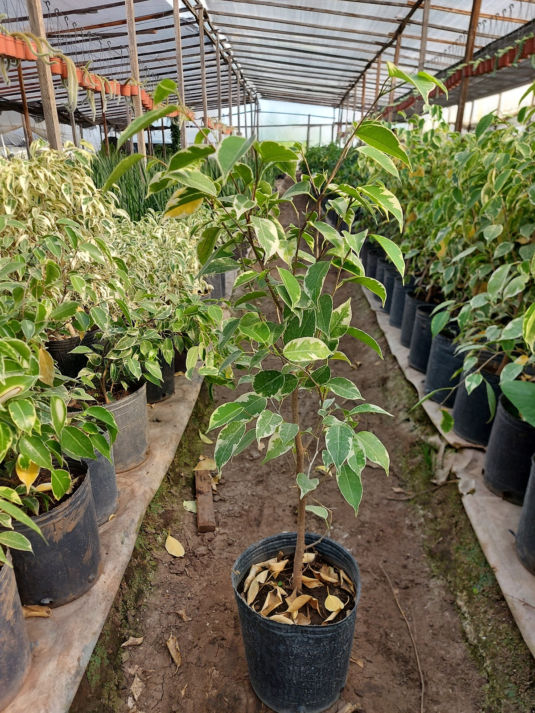

Especial Lotes & Countries

Privacidad Natural Todo el Año
Asesoramiento en Construcción de Cercos Vivos
Los cercos vivos brindan privacidad, reparo del viento y valor paisajístico a tu lote. Te orientamos en la elección adecuada según asolamiento y suelo, calculando la cantidad justa por metro.
- Arbustos perennes de rápido crecimiento (Olea, Photinia, Eugenio)
- Combinaciones florales perfumadas (Santa Ritas, Jazmines, Laurel de Flor)
- Cálculo técnico y entrega en countries de Loma Verde, Escobar, Maschwitz y Pilar